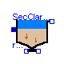
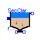
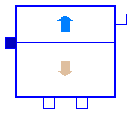

This package contains an ASM2d secondary clarifier model and an Interfaces
sub-library based on Krebs conceptional model [1].
The settler model consists of two compartments, a "sludge-bed" and
a clear water zone above.
Main Author: Gerald Reichl Technische Universitaet Ilmenau Faculty of Informatics and Automation Department Dynamics and Simulation of ecological Systems P.O. Box 10 05 65 98684 Ilmenau Germany email: gerald.reichl@tu-ilmenau.de
References: [1] P. Krebs and M. Armbruster and W. Rodi: Numerische Nachklaerbeckenmodelle. Korrespondenz Abwasser. 47 (7) 2000. pp 985-999.
Copyright (C) 2002 - 2003, Gerald Reichl
The Modelica package is free software; it can be redistributed and/or modified under the terms of the Modelica license, see the license conditions and the accompanying disclaimer in the documentation of package Modelica in file "Modelica/package.mo".

This component models an ASM2d secondary clarifier based on Krebs conceptional model. It consists of two compartments: a "sludge-bed" and a clear water zone above.
| Name | Default | Description |
|---|---|---|
| i_N_Si | 0.01 | N content of inert soluble COD Si [gN/gCOD] |
| i_N_Sf | 0.03 | N content of fermentable substrates Sf [gN/gCOD] |
| i_N_Xi | 0.02 | N content of inert particulate COD Xi [gN/gCOD] |
| i_N_Xs | 0.04 | N content of slowly biodegradable substrate Xs [gN/gCOD] |
| i_N_BM | 0.07 | N content of biomass, Xh, Xpao, Xa [gN/gCOD] |
| i_P_Si | 0.0 | P content of inert soluble COD Si [gP/gCOD] |
| i_P_Sf | 0.01 | P content of fermentable substrates Sf [gP/gCOD] |
| i_P_Xi | 0.01 | P content of inert particulate COD Xi [gP/gCOD] |
| i_P_Xs | 0.01 | P content of slowly biodegradable substrate Xs [gP/gCOD] |
| i_P_BM | 0.02 | P content of biomass, Xh, Xpao, Xa [gP/gCOD] |
| i_TSS_Xi | 0.75 | TSS to COD ratio for Xi [gTSS/gCOD] |
| i_TSS_Xs | 0.75 | TSS to COD ratio for Xs [gTSS/gCOD] |
| i_TSS_BM | 0.9 | TSS to COD ratio for biomass, Xh, Xpao, Xa [gTSS/gCOD] |
| hsc | 4.0 | height of secondary clarifier [m] |
| Asc | 1500.0 | area of secondary clarifier [m2] |
| ISV | 130 | Sludge Volume Index [ml/g] |
model SecClarModKrebs
"ASM2d Secondary Settling Tank Model based on Krebs"
extends WasteWater.Icons.SecClarKrebs;
package WWSC = WasteWater.ASM2d.SecClar.Krebs.Interfaces;
extends WWSC.SCVar;
extends WWSC.ratios;
extends WasteWater.ASM2d.Interfaces.conversion_factors;
package SI = Modelica.SIunits;
package WI = WasteWater.ASM2d.Interfaces;
package WWU = WasteWater.WasteWaterUnits;
parameter SI.Length hsc=4.0 "height of secondary clarifier";
parameter SI.Area Asc=1500.0 "area of secondary clarifier";
parameter WWU.SludgeVolumeIndex ISV=130 "Sludge Volume Index";
Real te "thickening time in sludge layer in [d]";
SI.Length hs "height of sludge layer";
SI.Length he "height of excess layer";
WI.WWFlowAsm2din Feed;
WI.WWFlowAsm2dout Effluent;
WI.WWFlowAsm2dout Return;
WI.WWFlowAsm2dout Waste;
equation
// total sludge concentration in clarifier feed
Xf = i_TSS_Xi*Feed.Xi + i_TSS_Xs*Feed.Xs + i_TSS_BM*(Feed.Xh + Feed.Xpao +
Feed.Xa) + 3.23*Feed.Xpp + 0.6*Feed.Xpha + Feed.Xmeoh + Feed.Xmep;
// ratios of solid components
rXi = Feed.Xi/Xf;
rXs = Feed.Xs/Xf;
rXh = Feed.Xh/Xf;
rXpao = Feed.Xpao/Xf;
rXpp = Feed.Xpp/Xf;
rXpha = Feed.Xpha/Xf;
rXa = Feed.Xa/Xf;
rXmeoh = Feed.Xmeoh/Xf;
rXmep = Feed.Xmep/Xf;
//following expression is only for steady state initial equation of XB and is necessary
//to calculate hs, if there would be problems with "initial()" in your modelica version
//leave out this term and initial XB (or hs) manually e.g. via script-file
if initial() then
XB = Feed.Q/(0.7*(-(Return.Q + Waste.Q)))*Xf;
end if;
//thickening time in sludge layer in [d]
te = 5/7*Asc*hs/(-(Return.Q + Waste.Q));
//sludge concentration in sludge layer (unit of time in [h]) in [g/m3]
XB = (1000/ISV*((te*24)^(1/3)))*1000;
//sludge concentration of return
XR = 0.7*XB;
//ODE of height of sludge layer
der(hs) = (Feed.Q*Xf - (-(Return.Q + Waste.Q))*XR)/(Asc/2*XB);
//height of excess layer
he = hsc - hs;
// ODE of soluble components in first stirrer tank of the excess layer
der(So1) = (Feed.Q*Feed.So - (-Effluent.Q)*So1 - (-(Waste.Q + Return.Q))*So1)/(Asc*he/2);
der(Sf1) = (Feed.Q*Feed.Sf - (-Effluent.Q)*Sf1 - (-(Waste.Q + Return.Q))*Sf1)/(Asc*he/2);
der(Sa1) = (Feed.Q*Feed.Sa - (-Effluent.Q)*Sa1 - (-(Waste.Q + Return.Q))*Sa1)/(Asc*he/2);
der(Snh1) = (Feed.Q*Feed.Snh - (-Effluent.Q)*Snh1 - (-(Waste.Q + Return.Q))*Snh1)/(Asc*he/2);
der(Sno1) = (Feed.Q*Feed.Sno - (-Effluent.Q)*Sno1 - (-(Waste.Q + Return.Q))*Sno1)/(Asc*he/2);
der(Spo1) = (Feed.Q*Feed.Spo - (-Effluent.Q)*Spo1 - (-(Waste.Q + Return.Q))*Spo1)/(Asc*he/2);
der(Si1) = (Feed.Q*Feed.Si - (-Effluent.Q)*Si1 - (-(Waste.Q + Return.Q))*Si1)/(Asc*he/2);
der(Salk1) = (Feed.Q*Feed.Salk - (-Effluent.Q)*Salk1 - (-(Waste.Q + Return.Q))*Salk1)/(Asc*he/2);
der(Sn2_1) = (Feed.Q*Feed.Sn2 - (-Effluent.Q)*Sn2_1 - (-(Waste.Q + Return.Q))*Sn2_1)/(Asc*he/2);
// ODE of soluble components in second stirrer tank of the excess layer
der(So2) = ((-Effluent.Q)*So1 - (-Effluent.Q)*So2)/(Asc*he/2);
der(Sf2) = ((-Effluent.Q)*Sf1 - (-Effluent.Q)*Sf2)/(Asc*he/2);
der(Sa2) = ((-Effluent.Q)*Sa1 - (-Effluent.Q)*Sa2)/(Asc*he/2);
der(Snh2) = ((-Effluent.Q)*Snh1 - (-Effluent.Q)*Snh2)/(Asc*he/2);
der(Sno2) = ((-Effluent.Q)*Sno1 - (-Effluent.Q)*Sno2)/(Asc*he/2);
der(Spo2) = ((-Effluent.Q)*Spo1 - (-Effluent.Q)*Spo2)/(Asc*he/2);
der(Si2) = ((-Effluent.Q)*Si1 - (-Effluent.Q)*Si2)/(Asc*he/2);
der(Salk2) = ((-Effluent.Q)*Salk1 - (-Effluent.Q)*Salk2)/(Asc*he/2);
der(Sn2_2) = ((-Effluent.Q)*Sn2_1 - (-Effluent.Q)*Sn2_2)/(Asc*he/2);
// volume flow rates
Feed.Q + Effluent.Q + Return.Q + Waste.Q = 0;
// effluent, solid and soluble components (ASM1)
Effluent.So = So2;
Effluent.Sf = Sf2;
Effluent.Sa = Sa2;
Effluent.Snh = Snh2;
Effluent.Sno = Sno2;
Effluent.Spo = Spo2;
Effluent.Si = Si2;
Effluent.Salk = Salk2;
Effluent.Sn2 = Sn2_2;
Effluent.Xi = 0.0*XR;
Effluent.Xs = 0.0*XR;
Effluent.Xh = 0.0*XR;
Effluent.Xpao = 0.0*XR;
Effluent.Xpp = 0.0*XR;
Effluent.Xpha = 0.0*XR;
Effluent.Xa = 0.0*XR;
Effluent.Xmeoh = 0.0*XR;
Effluent.Xmep = 0.0*XR;
Effluent.Xtss = 0.0*XR;
// return sludge flow, solid and soluble components (ASM1)
Return.So = So1;
Return.Sf = Sf1;
Return.Sa = Sa1;
Return.Snh = Snh1;
Return.Sno = Sno1;
Return.Spo = Spo1;
Return.Si = Si1;
Return.Salk = Salk1;
Return.Sn2 = Sn2_1;
Return.Xi = rXi*XR;
Return.Xs = rXs*XR;
Return.Xh = rXh*XR;
Return.Xpao = rXpao*XR;
Return.Xpp = rXpp*XR;
Return.Xpha = rXpha*XR;
Return.Xa = rXa*XR;
Return.Xmeoh = rXmeoh*XR;
Return.Xmep = rXmep*XR;
Return.Xtss = XR;
// waste sludge flow, solid and soluble components (ASM1)
Waste.So = So1;
Waste.Sf = Sf1;
Waste.Sa = Sa1;
Waste.Snh = Snh1;
Waste.Sno = Sno1;
Waste.Spo = Spo1;
Waste.Si = Si1;
Waste.Salk = Salk1;
Waste.Sn2 = Sn2_1;
Waste.Xi = rXi*XR;
Waste.Xs = rXs*XR;
Waste.Xh = rXh*XR;
Waste.Xpao = rXpao*XR;
Waste.Xpp = rXpp*XR;
Waste.Xpha = rXpha*XR;
Waste.Xa = rXa*XR;
Waste.Xmeoh = rXmeoh*XR;
Waste.Xmep = rXmep*XR;
Waste.Xtss = XR;
end SecClarModKrebs;